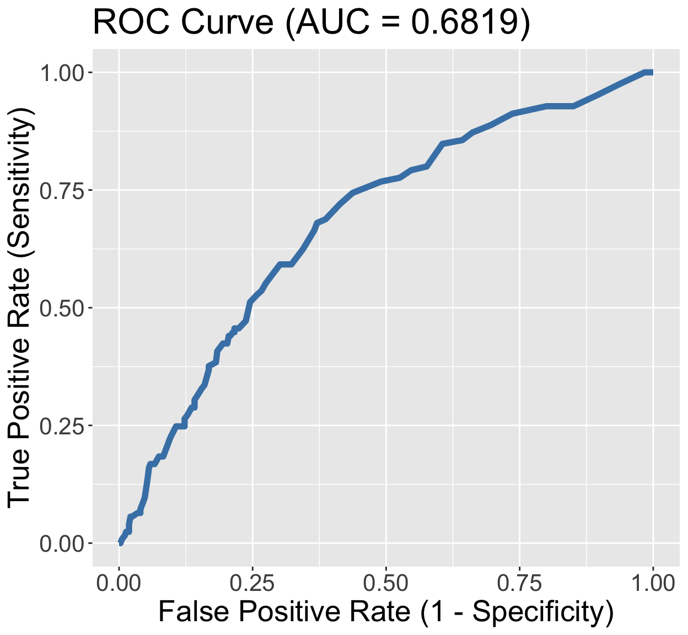

Lesson 12: Assessing Model Fit
Learning Objectives
Use the Pearson residual statistic to determine if our preliminary final model fits the data well
Use the Hosmer and Lemeshow goodness-of-fit statistic to determine if our preliminary final model fits the data well
Use the ROC-AUC to determine how well model predicts binary outcome
Apply AIC and BIC as a summary measure to make additional comparisons between potential models
Last Class: GLOW Study with interactions
Outcome variable: any fracture in the first year of follow up (FRACTURE: 0 or 1)
Risk factor/variable of interest: history of prior fracture (PRIORFRAC: 0 or 1)
Potential confounder or effect modifier: age (AGE, a continuous variable)
Fitted model with interactions: \[\begin{aligned} \text{logit}\left(\widehat\pi(\mathbf{X})\right) & = \widehat\beta_0 &+ &\widehat\beta_1\cdot I(\text{PF}) & + &\widehat\beta_2\cdot Age& + &\widehat\beta_3 \cdot I(\text{PF}) \cdot Age \\ \text{logit}\left(\widehat\pi(\mathbf{X})\right) & = -1.376 &+ &1.002\cdot I(\text{PF})& + &0.063\cdot Age& -&0.057 \cdot I(\text{PF}) \cdot Age \end{aligned}\]
- Today: determine the overall fit of this model
Last Class: Reporting results of GLOW Study with interactions
- Remember our main covariate is prior fracture, so we want to focuse on how age changes the relationship between prior fracture and a new fracture!
For individuals 69 years old, the estimated odds of a new fracture for individuals with prior fracture is 2.72 times the estimated odds of a new fracture for individuals with no prior fracture (95% CI: 1.70, 4.35). As seen in Figure 1 (a), the odds ratio of a new fracture when comparing prior fracture status decreases with age, indicating that the effect of prior fractures on new fractures decreases as individuals get older. In Figure 1 (b), it is evident that for both prior fracture statuses, the predict probability of a new fracture increases as age increases. However, the predicted probability of new fracture for those without a prior fracture increases at a higher rate than that of individuals with a prior fracture. Thus, the predicted probabilities of a new fracture converge at age [insert age here].
`geom_smooth()` using formula = 'y ~ x'
`geom_smooth()` using formula = 'y ~ x'
Overview (1/2)
- Once a potential final model has been determined, we need to assess the fit of the model
Variable selection is no longer our focus at this stage
- We want to find answer to whether the model fits the data adequately
Assessing the Goodness of Fit or Assessing model fit
Assess how well our fitted logistic regression model predicts/estimates the observed outcomes
Comparison: fitted/estimated outcome vs. observed outcome
Some good measurements for our final model(s)
- Pearson residual statistic
- Hosmer-Lemeshaw goodness-of-fit statistic
- AUC-ROC (area under the curve of the receiver operating characteristic)
- AIC/BIC
Overview (2/2)
- To assess the fit of the model, it is good to have a mixture of measurements
We want to measure the absolute fit: not comparing to any models, but determining if the model fits the data well
- Pearson residual statistic
- Hosmer-Lemeshaw goodness-of-fit statistic
- AUC-ROC (kind of, often do not use a hypothesis test but you can!)
We want comparable measures of fit: if we have candidate models that are not nested
- AUC-ROC
- AIC/BIC
Poll Everywhere Question 1
Components to Assess Model Fit
The model fits the data well if
Summary measures of the distance between the predicted/estimated/fitted and observed Y are small
- Today’s lecture!!
The contribution of each pair (predicted and observed) to these summary measures is unsystematic and is small relative to the error structure of the model
- Model Diagnostics that will be covered in another lecture!
Need both components
- It is possible to see a “good” summary measure of the distance between predicted and observed Y with some substantial deviation from fit for a few subjects
Summary Measures of Goodness of Fit
- Aka overall measure of fit
What do we need to calculate them?
Need to define what the fitted outcome is
Need to calculate how close the fitted outcome is to the observed outcome
Summarize across all observations (or individuals’ data)
Two tests of goodness-of-fit
- Pearson residual statistic
- Hosmer-Lemeshaw goodness-of-fit statistic
Comparing fitted outcome to observed outcome
In logistic regression model, we estimate \(\pi(\mathbf{X}) = P(Y=1|\mathbf{X})\)
- Predicted value, \(\widehat\pi(\mathbf{X})\), is between 0 and 1 for each subject
However, we always observe \(Y=1\) or \(Y=0\)
- Not an observed \(\pi(\mathbf{X})\)
We can deterimine the fitted outcome by sampling Y’s from a Bernoulli distribution with the fitted probability
- \(\widehat{Y} \sim \text{Bernoulli}(\widehat\pi(\mathbf{X}))\)
If there are groups of individuals that share the same covariate observations, then we can use the same \(\widehat\pi(\mathbf{X})\)
- \(\sum_j \widehat{Y} \sim \text{Binomial}(\sum_j, \widehat\pi(\mathbf{X}))\)
- Instead of comparing the expected vs. observed at individual level, we can compare them at “group” level
Number of Covariate Patterns
When the logistic regression model contains only categorical covariates, we can think of the number of covariate patterns
For example: model contains two binary covariates (history of fracture and smoking status), there will be 4 unique combination of these factors
- This model has 4 covariate patterns
- Subjects can be divided into 4 groups based on the covariates’ values
We can then compute the predicted number of individuals with Y=1 in each group, and compare that with the actual observed number of individuals with Y=1 in that group
- We don’t need to sample this
- We use the expected value (mean) of the Binomial to determine the \(\widehat{Y}\) for each covariate pattern
- For covariate pattern \(j\) with \(m_j\) observations: \[\widehat{Y}_j = m_j \widehat\pi(\mathbf{X_j}) = m_j{\hat{\pi}}_j\]
Learning Objectives
- Use the Pearson residual statistic to determine if our preliminary final model fits the data well
Use the Hosmer and Lemeshow goodness-of-fit statistic to determine if our preliminary final model fits the data well
Use the ROC-AUC to determine how well model predicts binary outcome
Apply AIC and BIC as a summary measure to make additional comparisons between potential models
Pearson Residual
In logistic regression model, can use Pearson residual for summary measure of goodness-of-fit Uses the \(\widehat{Y}_j\) fitted value from previous slide
Pearson residual for jth covariate pattern is: \[r\left(Y_j,{\hat{\pi}}_j\right)=\frac{(Y_j-m_j{\hat{\pi}}_j)}{\sqrt{m_j{\hat{\pi}}_j(1-{\hat{\pi}}_j)}}=\frac{(Y_j-{\hat{Y}}_i)}{\sqrt{{\hat{Y}}_i(1-{\hat{\pi}}_j)}}\]
The summary statistics of Pearson residual is thus: \[X^2=\sum_{j=1}^{J}{r\left(Y_j,{\hat{\pi}}_j\right)^2}\]
Pearson Residual procedure
Set the level of significance \(\alpha\)
Specify the null ( \(H_0\) ) and alternative ( \(H_A\) ) hypotheses: same for all data
- \(H_0\): model fits well
- \(H_1\): model does not fits well
Calculate the test statistic and p-value
Write a conclusion to the hypothesis test
- Do we reject or fail to reject \(H_0\)?
- Write a conclusion in the context of the problem
Not going to bother going through an example
- We can calculate this by hand and test against a chi-squared distribution
- No set R code to do this
I do not see this as the main way to determine goodness of fit… for a binary outcome!
- Often because of the bigger issues with it…
Issues with Pearson Residuals
Assume current model has p covariates…
then \(X^2\) (Pearson residual) follows a chi-squared distribution
- under the null hypothesis based on large sample theory
Only appropriate if the number of covariate patterns is less than the number of observations
- When the logistic regression model contains one or more continuous covariates, it is likely that the number of covariate patterns equals to the sample size n
- We should not use Pearson Residuals to evaluate goodness-of-fit test when the fitted model contains one or more continuous variables
Learning Objectives
- Use the Pearson residual statistic to determine if our preliminary final model fits the data well
- Use the Hosmer and Lemeshow goodness-of-fit statistic to determine if our preliminary final model fits the data well
Use the ROC-AUC to determine how well model predicts binary outcome
Apply AIC and BIC as a summary measure to make additional comparisons between potential models
Hosmer-Lemeshow test
If number of covariate patterns is roughly same as the number of observations
- Whenever you include a continuous variable in your model
- Hosmer-Lemeshow (HL) goodness-of-fit test should be used instead
However, HL test does not work well if the number of covariate patterns is small
- HL test should not be used if the number of covariate patterns ≤ 6
- For reference: 3 binary predictors makes 8 covariate patterns
- Pearson residuals \(X^2\) should be used when the number of covariate patterns is small
- HL test should not be used if the number of covariate patterns ≤ 6
- A large p-value from HL test suggests the model fits well
Poll Everwhere question 2
Hosmer-Lemeshow test
- HL test uses groupings from percentiles to basically measure what Pearson residual measures
Steps to compute HL test statistic:
- Compute estimated probability \(\widehat\pi(\mathbf{X}))\) for all n subjects (\(n=1, 2, ..., n\))
- Order \(\widehat\pi(\mathbf{X}))\) from largest to smallest values
- Divide ordered values into g percentile grouping (usually \(g = 10\) based on H-L’s suggestion)
- Form table of observed and expected counts
- Calculate HL test statistic from table
- Compare HL test statistic to chi-squared distribution (\(\chi^2_{g-2}\))
Hosmer-Lemeshow test statistic
The test statistic of Hosmer-Lemeshow goodness-of-fit test is denoted by \(\widehat{C}\), which is obtained by calculating the Pearson chi-squared statistic from the \(g \times 2\) table of observed and estimated expected frequencies \[\hat{C}=\sum_{k=1}^{g}\frac{\left(o_k-n_k^\prime{\bar{\pi}}_k\right)^2}{n_k^\prime{\bar{\pi}}_k(1-{\bar{\pi}}_k)}\]
- where \(n'_k\) is the total number of subjects in the \(k\)th group
Let \(c_k\) be the number of covariate patterns in the \(k\)th decile: \[o_k=\sum_{j=1}^{c_k}y_j\] and \[{\bar{\pi}}_k=\sum_{j=1}^{c_k}\frac{m_j{\hat{\pi}}_j}{n_k^\prime}\]
Hosmer-Lemeshow test procedure
Set the level of significance \(\alpha\)
Specify the null ( \(H_0\) ) and alternative ( \(H_A\) ) hypotheses: same for all data
- \(H_0\): model fits well
- \(H_1\): model does not fits well
Calculate the test statistic and p-value
- Note: \(\widehat{C} \sim \chi^2_{df=g-2}\)
Write a conclusion to the hypothesis test
- Do we reject or fail to reject \(H_0\)?
- Write a conclusion in the context of the problem
GLOW Study: Hosmer-Lemeshow test
Okay, so let’s look at the interaction model from last class \[\text{logit}\left(\pi(\mathbf{X})\right) = \beta_0 + \beta_1\cdot I(\text{PF}) +\beta_2\cdot Age + \beta_3 \cdot I(\text{PF}) \cdot Age\]
We need to fit the model and use a new command:
glow_m3 = glm(fracture ~ priorfrac + age_c + priorfrac*age_c,
data = glow, family = binomial)
library(ResourceSelection)ResourceSelection 0.3-6 2023-06-27obs_vals = as.numeric(glow$fracture) -1
fit_vals = fitted(glow_m3)
hoslem.test(obs_vals, fit_vals, g = 10)
Hosmer and Lemeshow goodness of fit (GOF) test
data: obs_vals, fit_vals
X-squared = 6.778, df = 8, p-value = 0.5608Note to Nicky: do NOT make conclusion yet! In the poll everywhere!
Poll Everywhere question 3
GLOW Study: Hosmer-Lemeshow test
- Conclusion: The p-value is 0.5608, so we fail to reject the null hypothesis that the model fits the data well. Thus, the preliminary final model for the GLOW dataset fits the data well
- Don’t forget that we still need to check individual observations (Model Diagnostics!)
R may give results for the HL test even if it is not appropriate to use it!
- If number of covariate patterns ≤ 6, do not use HL test
Big Data Issue in Goodness-of-fit Test
- When the sample size is really big (> 1000), it is much more likely to find the H-L reject the model fit (even when the expected vs. observed in each decile categories looks pretty similar)
This is due to “too much” power in hypothesis testing.
- Paul et al. (2012) for samples sizes from 1000 to 25,000, the number of groups g should be equal to \[g=\max{\left(10,\min{\left\{\frac{n_1}{2},\ \frac{n-n_1}{2},\ 2+8\left(\frac{n}{1000}\right)^2\right\}}\right)}\]
For example, if one has a sample with \(n=10, 000\) (sample size) and \(n_1=1,000\) (number of events) then \(g=500\) groups are suggested
For n > 25000, other methods, such as partitioning data into a developmental data set (with smaller n) and a validation set
Final Notes on Goodness-of-fit Test
They should not be used for variable selection
- The likelihood ratio tests for significance of coefficients are much more powerful and appropriate (when nested)
They are not for model comparison
One should not use the p-value from goodness of fit tests of different models to decide which model is better than the other
Something like AUC-ROC, AIC, or BIC can be used
Learning Objectives
Use the Pearson residual statistic to determine if our preliminary final model fits the data well
Use the Hosmer and Lemeshow goodness-of-fit statistic to determine if our preliminary final model fits the data well
- Use the ROC-AUC to determine how well model predicts binary outcome
- Apply AIC and BIC as a summary measure to make additional comparisons between potential models
ROC Curve and AUC (1/2)
- Receiver Operating Characteristics (ROC) curve is useful tool to quantify how good is our model predicting binary outcome
It is a plot of sensitivity (true positive rate) versus (1-specificity) or false positive rate of fitted binary values
True Positive Rate \(= \dfrac{TP}{TP + FN}\)
False Positive Rate \(= \dfrac{FP}{FP + TN}\)
- The ROC curve shows the tradeoff between sensitivity and specificity

ROC Curve and AUC (2/2)
Area under the ROC curve (AUC ROC) is a reasonable summary of the overall predictive accuracy of the test
- Accuracy means how well the predicted value matches the observed value
The closer the curve follows the left-hand border and top border of the ROC space, the more accurate the test
- An AUC =1 represents 100% accuracy
The closer the curve comes to the 45-degree diagonal line, the less accurate the test
An AUC = 0.5 represents an unhelpful model
- Random predictions

Poll Everywhere Question 4
ROC Curve and AUC (3/3)
- Often only report the AUC
- Suggestions of how to interpret model fit through AUC values:
GLOW Study: ROC of interaction model
library(pROC)
predicted <- predict(glow_m3, glow, type="response")
# define object to plot and calculate AUC
rocobj <- roc(glow$fracture, predicted)
auc <- round(auc(glow$fracture, predicted),4)
#create ROC plot
ggroc(rocobj, colour = 'steelblue',
size = 2, legacy.axes = TRUE) +
ggtitle(paste0('ROC Curve ','(AUC = ',auc,')')) +
theme(text = element_text(size = 23)) +
xlab("False Positive Rate (1 - Specificity)") +
ylab("True Positive Rate (Sensitivity)")Type 'citation("pROC")' for a citation.
Attaching package: 'pROC'The following object is masked from 'package:epiDisplay':
ciThe following objects are masked from 'package:stats':
cov, smooth, varSetting levels: control = No, case = YesSetting direction: controls < casesSetting levels: control = No, case = YesSetting direction: controls < cases
- We have a poorly fitting model
- We can take
aucand compare it to other models: good way to pick a model based on predictive power
Another way to think about AUC
- GLOW Study: Consider the situation in which the fracture status of each individual is known
Randomly pick one individual from fractured group and one from non-fractured outcome group
- Based on their age, height, prior fracture, and all other covariates, we will correctly predict which is from fractured group
- The AUC is the percentage of randomly drawn pairs for which we predict the pair correctly
- Therefore, AUC represents the ability of our covariates to discriminate between individuals with the outcome (fracture) and those without the outcome
Learning Objectives
Use the Pearson residual statistic to determine if our preliminary final model fits the data well
Use the Hosmer and Lemeshow goodness-of-fit statistic to determine if our preliminary final model fits the data well
Use the ROC-AUC to determine how well model predicts binary outcome
- Apply AIC and BIC as a summary measure to make additional comparisons between potential models
AIC and BIC
Two widely used non-hypothesis testing based measurements that helps select a good model
- Akaike Information Criterion (AIC)
- Bayesian Information Criterion (BIC)
- Unlike likelihood ratio test which is only suitable for nested model, AIC and BIC are suitable for both nested and non-nested model
There is no hypothesis/conclusion testing for the comparison between two models
- So not the best for selecting covariates to include in model
- BUT helpful if you have a few preliminary final models that you want to compare
Poll Everywhere Question 5
AIC and BIC
- Both AIC and BIC penalize a model for having many parameters
| Measure of fit | Equation | R code |
|---|---|---|
| Akaike information criterion (AIC) | \(AIC = -2 \cdot \text{log-likelihood} + 2q\) | AIC(model_name) |
| Bayesian information criterion (BIC) | \(AIC = -2 \cdot \text{log-likelihood} + q\text{log}(n)\) | BIC(model_name) |
Where q is the number of parameters in the model and n is the sample size
Both AIC and BIC can only be used to compare models fitting the same data set
In comparing two models, the model with smaller AIC and/or BIC is preferred
- When the difference in AIC between two models exceeds 3, the difference is viewed as “meaningful”
AIC and BIC in R
- After fitting the logistic regression model, can calculate AIC and BIC
- Let’s look at the AIC and BIC of our interaction model:
AIC(glow_m3)[1] 531.2716BIC(glow_m3)[1] 548.13Learning Objectives
Use the Pearson residual statistic to determine if our preliminary final model fits the data well
Use the Hosmer and Lemeshow goodness-of-fit statistic to determine if our preliminary final model fits the data well
Use the ROC-AUC to determine how well model predicts binary outcome
Apply AIC and BIC as a summary measure to make additional comparisons between potential models
Summary (1/2)
| Measure of fit | Hypothesis tested? | Equation | R code |
|---|---|---|---|
| Pearson residual | Yes | \(X^2=\sum_{j=1}^{J}{r\left(Y_j,{\hat{\pi}}_j\right)^2}\) | Not given |
| Hosmer-Lemeshow test | Yes | \(\hat{C}=\sum_{k=1}^{g}\frac{\left(o_k-n_k^\prime{\bar{\pi}}_k\right)^2}{n_k^\prime{\bar{\pi}}_k(1-{\bar{\pi}}_k)}\) | hoslem.test() |
| AUC-ROC | Kinda | Not given | auc(observed, predicted) |
| AIC | Only to compare models | \(AIC = -2 \cdot \text{log-likelihood} + 2q\) | AIC(model_name) |
| BIC | Only to compare models | \(AIC = -2 \cdot \text{log-likelihood} + q\text{log}(n)\) | BIC(model_name) |
Special notes:
Use Hosmer-Lemshow test over Pearson residual unless number of covariate patterns is less than 6
Cannot use Pearson residual when there is a continuous variable in the model
Summary (2/2)
For our interaction model: \[\begin{aligned} \text{logit}\left(\widehat\pi(\mathbf{X})\right) & = \widehat\beta_0 &+ &\widehat\beta_1\cdot I(\text{PF}) & + &\widehat\beta_2\cdot Age& + &\widehat\beta_3 \cdot I(\text{PF}) \cdot Age \\ \text{logit}\left(\widehat\pi(\mathbf{X})\right) & = -1.376 &+ &1.002\cdot I(\text{PF})& + &0.063\cdot Age& -&0.057 \cdot I(\text{PF}) \cdot Age \end{aligned}\]
We can examine the overall model fit using:
Not comparing to any other models:
- Pearson residual: Not appropriate for this model
- Hosmer-Lemeshow: \(\hat{C}=6.778\), p-value = 0.56
- AUC-ROC: 0.6819
Can be used to compare to other models:
- AUC-ROC: 0.6819
- AIC: 531.27
- BIC: 548.13